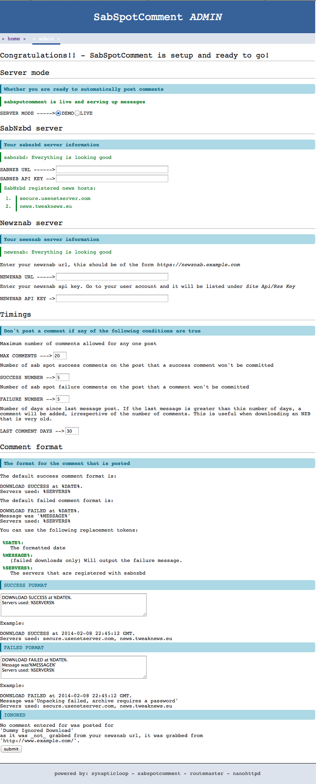

Administration options
For all of the other options...
Timings
[MAX COMMENTS] If there are more than this number of comments - then do not comment on this nzb
[SUCCESS NUMBER] Do not comment on the nzb if there are this many sab-spot-comment comments on it that say success
[FAILURE NUMBER] Do not comment on the nzb if there are this many sab-spot-comment comments on it that say failed
[LAST COMMENT DAYS] If there have been no comments in this number of days, then add a comment, irregardless of any of the other options.
Comment format
This should be self-explanatory, as a side note, there application will always prepend a hard-coded string to the front of all comments:
- [SSC-T] if the download was a success
- [SSC-F] if the download was failed